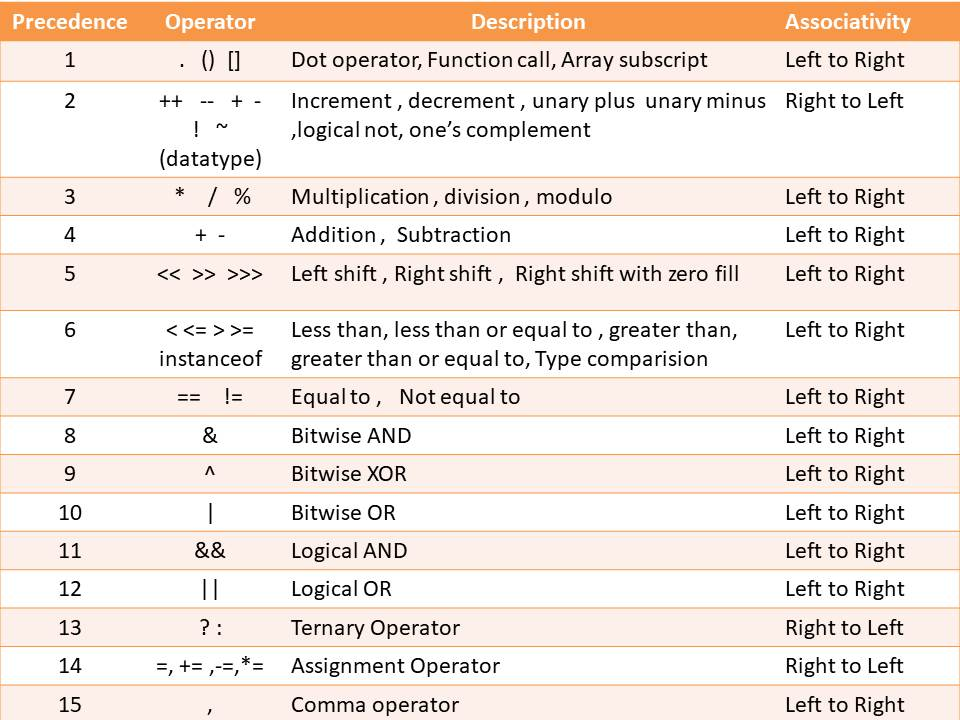

Operators in Java
Java supports a rich sets of Operators. But question is what is an Operators in java ? In simple word Operators is define as Symbols tell the computer to perform specific Operation and perform mathematical and logical manipulations that is called an Opertors. operators like +,*,-,/. There are several types of Operators :
Arithmetic Operators
Arithmetic Operators are used to perform simple arithmatical operation such +,-,* etc.
- + : Addition
- - : Subtraction
- * : Multiplication
- / : Division
- % : Modulo(Remainder)
class Operators {
public static void main(String[] args) {
int a = 20;
int b = 6;
System.out.println("a + b = " + (a + b));
System.out.println("a - b = " + (a - b));
System.out.println("a * b = " + (a * b));
System.out.println("a / b = " + (a / b));
System.out.println("a % b = " + (a % b));
}
}
Output:
a + b = 26
a - b = 14
a * b = 120
a / b = 3
a % b = 2
Unary Operators
Unary Operators required only one Operand.
- +x : Unary Plus
- -y : Unary Minus
- ++ : Increment Operator
- ++x : pre-Increment(++ is written Before the operand).
- x++ : post-Increment(++ is written After the operand).
- -- : Decrement Operator
- --x : pre-Decrement(-- is written Before the operand).
- x-- : post-Decrement(-- is written After the operand).
class Operators {
public static void main(String[] args) {
int a = 20;
System.out.println("a++ = " + (a++)); // a = 20
System.out.println("++a = " + (++a)); // a= (20+1) + 1 = 22
System.out.println("a-- = " + (a--)); // a= 22
System.out.println("--a = " + (--a)); // a = (22-1)-1 = 20
}
}
Output:
a++ = 20
++a = 22
a-- = 22
--a = 20
Logical Operators
An expression that combines two or more expressions is termed as a logical expression. The result of the operation of logical operator is a boolean value either true or false.
- && : logical AND (This operator gives the net result true if both the condition are true, otherwise the result is false.)
- || : logical OR (This operator gives the net result false, if both the condition have the value false, otherwise the result is true.)
- ! : logical NOT (This Unary operator and it negate the value of the condition. If the value of the condition is false then it gives the result true and vice-versa.)
class Operators {
public static void main(String[] args) {
boolean a = true;
boolean b = true;
System.out.println("a AND b = " +(a&&b));
System.out.println("a OR b = " + (a||b ));
System.out.println("NOT a = "+ (!a));
}
}
Output:
a AND b = true
a OR b = true
NOT a = false
Relational Operators
We often to compare two quantities, they depends on their relation.
- < : is less than
- <= : is less than or equal to
- > : is greater than
- >= : is greater than or equal to
- == : is equal to
- != : is not equal to
class Operators {
public static void main(String[] args) {
int a =7;
int b= 6;
System.out.println("a < b : " + (a < b));
System.out.println("a <= b : " + (a <= b) );
System.out.println("a > b : "+ (a > b) );
System.out.println("a >= b : "+ (a >=b) );
System.out.println("a == b : "+ (a == b) );
System.out.println("a != b = "+ (a != b) );
}
}
Output:
a < b : false
a <= b : false
a > b : true
a >= b : true
a == b : false
a != b = true
Assignment Operator
Assignment Operators(=) are used to assign the value of a variable. suppose
a = 15 is read as 15 assign to variable a.
- += adding the left operand with the right operand and then assign to the variable on the left.
- -= subtracting the left operand with the right operand and then assign to the variable on the left.
- *= multiply the left operand with the right operand and then assign to the variable on the left.
- /= divide the left operand with the right operand and then assign to the variable on the left.
- similarly %=, |=, &=, >>=, <<=
class Operators {
public static void main(String[] args) {
int a =7;
System.out.println("a += 2 : " + (a += 2));
System.out.println("a -= 5 : " + (a -= 5) );
System.out.println("a *= 3 : "+ (a *= 3) );
System.out.println("a /= 3 : "+ (a /=3) );
System.out.println("a >>= 2 : "+ (a >>= 2) ); //4--> 0100 >>=2 -->0001-->1
System.out.println("a<<= 3 : "+ (a <<=3) ); //1--> 0001 <<=3 --> 1000--> 8
}
}
Output:
a += 2 : 9
a -= 5 : 4
a *= 3 : 12
a /= 3 : 4
a >>= 2 : 1
a <<= 3 : 8
Ternary Opertor/ Conditional Operator
The Ternary operator is character pair of ? : operators that are used three expression. In
simple word Ternary Operators are shorthand property of if...else.
Syntax :
Condition ? if_true : if_false
class Operators {
public static void main(String[] args) {
int a = 7;
int b = 12;
boolean isTrue;
isTrue = a>b ? true : false ;
System.out.println("isTrue = " + isTrue);
}
}
Output:isTrue = false
Bitwise Operators
As the name suggest operations are perform at bit level. These Operators are used for testing the bits, or shifting them left or right.
- & : Bitwise AND
- | : Bitwise OR
- ~ : One's complement
- ^ : Bitwise Exclusive OR
- << : Left shift
- >> : right shift
- >>> : shift right with zero fill
class Operators {
public static void main(String[] args) {
int a = 0b1001;
int b = 0b1100;
System.out.println("a & b: " + (a & b)); // 0000 1000 --> 8
System.out.println("a | b: " + (a | b)); //0000 1101 -->13
System.out.println("a ^ b: " + (a ^ b)); // 0000 0101 --> 05
System.out.println("~a: " + (~a)); //
System.out.println("a << 2: " + (a << 2)); //0010 0100-->36
System.out.println("b >> 1: " + (b >> 1)); // 0000 0110 --> 6
System.out.println("b >>> 1: " + (b >>> 1));
}
}
Output:
a & b: 8
a | b: 13
a ^ b: 5
~a: -10
a << 2: 36
b >> 1: 6
b >>> 1: 6
Note: >> and >>> are bitwise right shift operator, which perform a similar operation. The main difference between two operators is in how they handle the sign bit.
Special Operators
Java support some special operators of interest such as instanceof operator and (.) operator.
- instanceof operator: The instanceof is an object reference operator and return true if the object on the left hand side is an instance of the class given to right hand side. This Opertor allow to determine whether the object belong to a particular class or not.(instanceof operator are discuss in class and object in java.)
- Dot operator : Dot(.) operator is used to access the instance variable and methods of class objects.
Example : person instanceof student
Example: person.age
Precedence and Associativity
Each Operator in Java has a precedence and Associativity. This precedence determine how an expression involving more than one operator is evaluated. The Operators at the higher level of precedence are evaluated first. The Operators of the same precedence are evaluated either Left to Right or Right to left depends upon its associativity.
Input-Output in Java
Input Output in java is used to take input from the user and give the output to the user, using I/O stream. The java.io package contain all the classes required for excute I/O operation.
Method to take Input in java
- Buffer Reader class for string input in java : using InputStreamReader() is a function that converts the input stream of bytes into a stream of characters so that it can be read as BufferedReader expects a stream of characters.
import java.io.*;
class InputOutput{
public static void main(String [] args){
BufferedReader obj = new BufferedReader(new InputStreamReader(System.in));
String str;
try{
System.out.println("Enter any String : ");
str = obj.readLine();
System.out.println("String : " + str);
}
catch(Exception e){
System.out.println(e);
}
}
}
Output:
Enter any String :
I love Java
String : I love Java
java.util.Scanner package.Syntax: Scanner inp = new Scanner(System.in);
import java.util.Scanner;
class InputOutput{
public static void main(String [] args){
Scanner inp = new Scanner(System.in);
String name;
int id;
float salary;
System.out.println("Enter Your name: ");
name = inp.next();
System.out.println("Enter Your Id: ");
id = inp.nextInt();
System.out.println("Enter Your Salary: ");
salary = inp.nextFloat();
System.out.println("Name : "+ name + "\tId: " + id + "\tSalary : "+ salary);
}
}
Output:
Enter Your name:
Rohit
Enter Your Id:
007
Enter Your Salary:
50005.36
Name : Rohit Id: 7 Salary : 50005.36